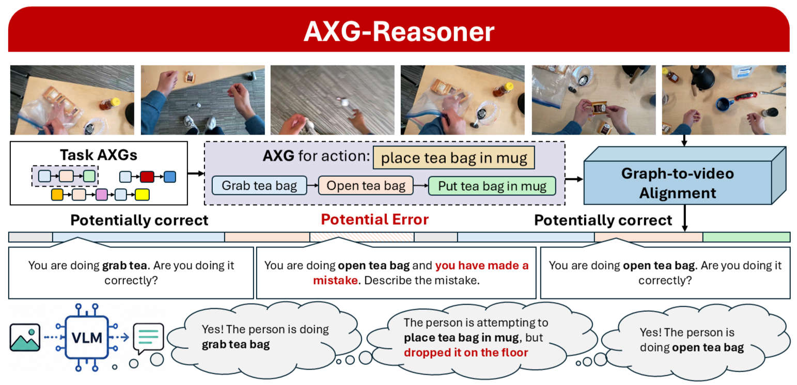
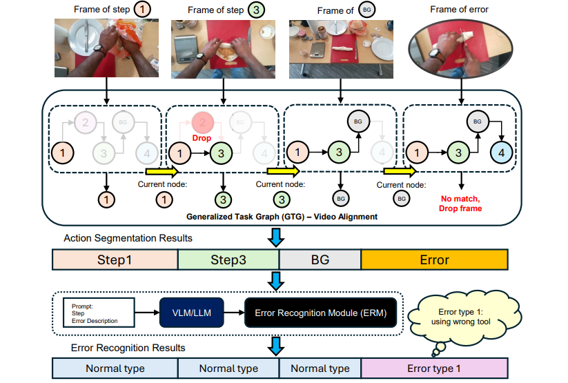
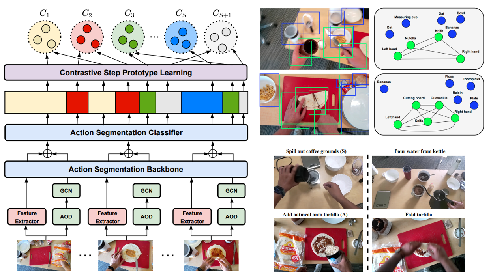
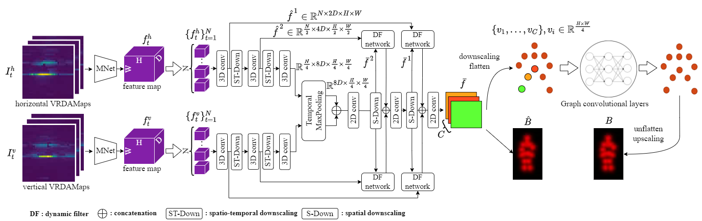
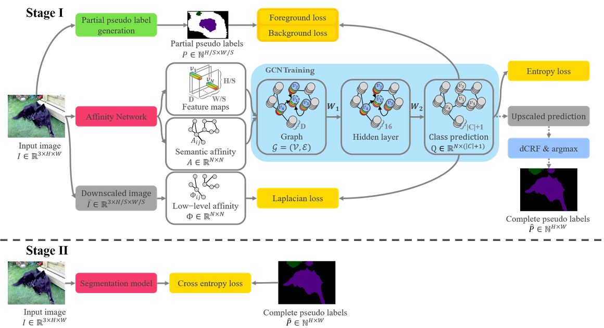

PhD Candidate · Northeastern University
Hello! My name is Shih-Po (Robert) Lee. I am a PhD candidate in the Khoury College of Computer Sciences at Northeastern University, advised by Ehsan Elhamifar. My research focuses on video understanding, computer vision, and deep learning. I am curretnly working on multimodal large language models and vision-language models for understanding long ego/exo-view procedural video.
News
Feb 20, 2026
Our paper has been accepted to CVPR 2026.
Oct 22, 2025
Attended ICCV 2025 in Hawaii and presented "Error Recognition in Procedural Videos using Generalized Task Graph".
May 5, 2025
Joined Honda Research Institute USA as a research intern.
Jun 17, 2024
Attended CVPR 2024 in Seattle and presented "Error Detection in Egocentric Procedural Task Videos".
Selected Research Projects



HuPR: A Benchmark for Human Pose Estimation Using Millimeter Wave Radar
WACV 2023 · January

GSVNet: Guided Spatially-Varying Convolution for Fast Semantic Segmentation on Video
ICME 2021 · July

Weakly-Supervised Image Semantic Segmentation Using Graph Convolutional Networks
ICME 2021 · July
Experience
Research Intern · Honda Research Institute USA
May 2025 – August 2025

Visiting Student · Electrical & Computer Engineering
September 2021 – March 2022

Research Assistant · UW-NCTU AI Lab
August 2020 – August 2022
Teaching Assistant · MediaTek In-house AI Training Program
August 2019 – January 2020
Education

PhD in Khoury College of Computer Sciences
September 2022 – Present
M.S. in Computer Science and Engineering
September 2018 – August 2020

B.S. in Computer Science and Engineering
September 2014 – July 2018
Publications
S.-P. Lee and E. Elhamifar, "AXG-Reasoner: Error Detection and Explanation in Long Task Videos with Vision–Language Models," CVPR, June 2026
S.-P. Lee and E. Elhamifar, “Error Recognition in Procedural Videos using Generalized Task Graph.” ICCV, October 2025.
S.-P. Lee, Z. Lu, Z. Zhang, M. Hoai, and E. Elhamifar, “Error Detection in Egocentric Procedural Task Videos.” CVPR, June 2024.
S.-P. Lee, N. P. Kini, W.-H. Peng, C.-W. Ma, and J.-N. Hwang, “HuPR: A Benchmark for Human Pose Estimation Using Millimeter Wave Radar.” WACV, January 2023.
S.-P. Lee, S. C. Chen, and W. H. Peng, “GSVNet: Guided Spatially-Varying Convolution for Fast Semantic Segmentation on Video.” ICME, July 2021.
S. Y. Pan, C. Y. Lu, S.-P. Lee, and W. H. Peng, “Weakly-Supervised Image Semantic Segmentation Using Graph Convolutional Networks.” ICME, July 2021.